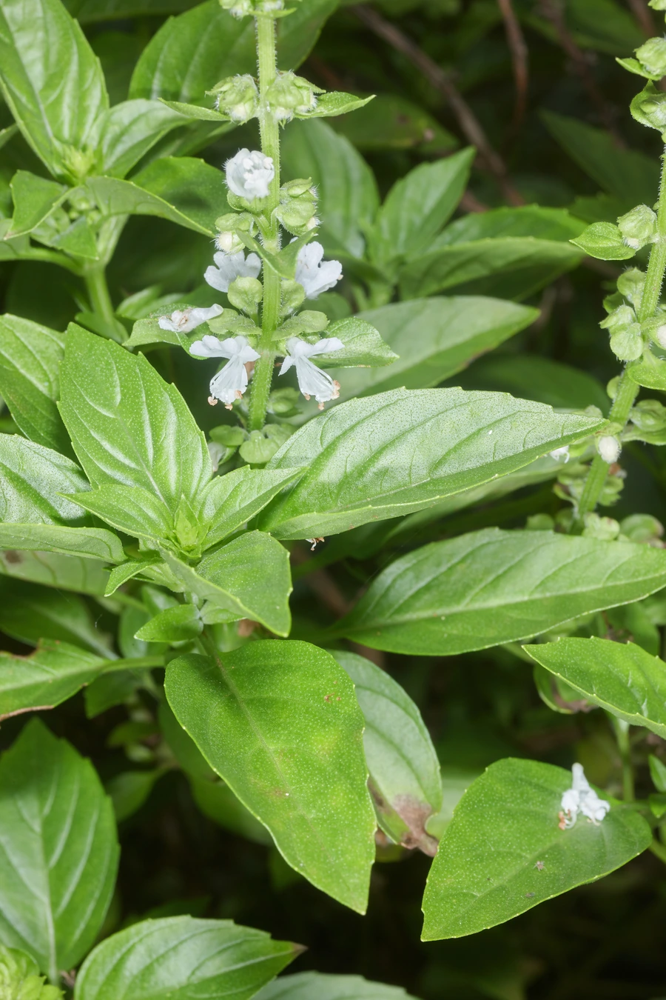

花卉与草本 · 植物界
罗勒 Ocimum basilicum

唇形科一年生草本，叶片芳香，是意大利青酱、东南亚料理和台式三杯鸡中不可或缺的香草，也常被称为九层塔。
- 分类
- 门被子植物门纲木兰纲目唇形目科唇形科属罗勒属
- 栖息环境
- 热带亚洲的向阳坡地与田边，喜温暖湿润、阳光充足
- 地理分布
- 原产热带亚洲，现全球温暖地区栽培，中国南方常见
- 保护级别
- 暂无评估
物种志
罗勒为唇形科罗勒属一年生草本，株高 30–60 厘米，茎直立，四棱形，多分枝，全株被柔毛。叶片对生，卵形至长圆形，边缘有疏锯齿，揉碎后散发浓郁甜香。轮伞花序组成顶生的总状花穗，花小，白色或淡紫色，花期 6–9 月，果期 8–10 月，小坚果遇水会膨胀成胶质。
罗勒原产热带亚洲，喜温暖、阳光充足和湿润的环境，不耐寒，遇霜即枯。它是世界著名的香草，意大利菜用它制作青酱，泰国菜用打抛罗勒增香，中国台湾的三杯鸡和潮汕菜也离不开九层塔。叶片富含芳樟醇、丁香酚等挥发油，可鲜食、干制或提取精油；种子在东南亚被制成饮品“兰香子”，吸水后外层形成透明胶膜。
形态与习性
- 株高30–60 厘米，茎四棱形
- 花期6–9 月，花穗白色或淡紫
- 果期8–10 月，小坚果遇水膨胀
- 光照喜光，每天需 6 小时以上光照
- 水分喜湿润，忌积水
- 土壤疏松肥沃、排水良好的壤土
- 繁殖以播种为主，也可扦插
- 主要用途鲜食香草、青酱、精油
趣味知识
- 罗勒在台湾称九层塔，因花序层层叠生如塔而得名。
- 意大利青酱的核心原料就是罗勒叶、松子、蒜和橄榄油。
- 罗勒种子吸水后外层形成透明胶质，可制成饮品兰香子。
- 罗勒与番茄是经典搭配，能让番茄料理的香气更突出。